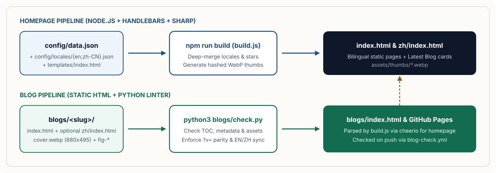

This starter tutorial demonstrates every built-in feature of the academic homepage and blog template. Inspired by Lil'Log[1], posts are written as self-contained static HTML pages with light/dark themes, a sticky desktop table of contents, self-hosted typography, and automated structural validation.
Overview
Keeping homepage generation and long-form blog posts cleanly decoupled makes both easy to maintain. While build.js compiles your bilingual homepage from JSON configuration, each post under blogs/ can embed custom figures, tables, code snippets, and equations without touching the template compiler.
Homepage & Blog Pipeline
When npm run build executes, it compiles the English and Chinese homepages, optimizes figures into content-hashed WebP thumbnails, and extracts the newest posts listed in blogs/index.html into the homepage Blog section.


Math Equations & Figures
Mathematical expressions render offline through self-hosted KaTeX scripts in assets/vendor/katex/. For example, a velocity-matching objective can be written inline as $v_\theta(x_t, t)$ or as a centered display block:
| File | Purpose | Validated By |
|---|---|---|
config/data.json | Profile, papers, experience | npm run build |
blogs/<slug>/index.html | Static EN / ZH article pages | blogs/check.py |
blogs/index.html | Post index & homepage feed | blogs/check.py |
Publishing Workflow
Copy blogs/example/ into a new slug folder, register the entry in blogs/index.html, and run local verification before pushing:
python3 blogs/check.py
npm run build
python3 -I -m http.server 8000 --bind 127.0.0.1Citation
Cited as:
Chen, Alex. (Nov 2026). Getting Started with This Research Blog. Alex Chen's Blog. https://yourusername.github.io/blogs/sample-post/.
Or
@article{chen2026gettingstarted,
title = "Getting Started with This Research Blog",
author = "Chen, Alex",
journal = "yourusername.github.io",
year = "2026",
month = "Nov",
url = "https://yourusername.github.io/blogs/sample-post/"
}References
- Lil'Log. Weng, Lilian. Layout reference for this blog system.